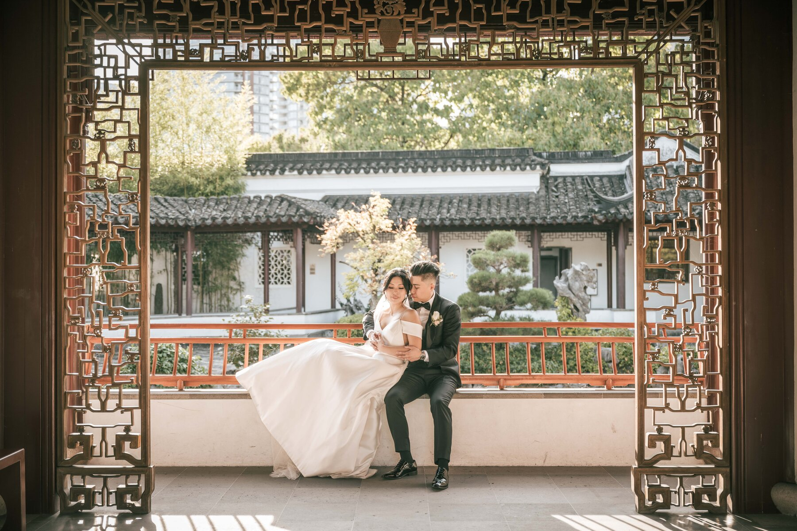

If you've ever seen a wedding photo that made you exhale — the kind where light seems to pour off the couple like liquid gold — you've likely witnessed the work of golden hour. It's not an accident. It's physics, and it's the single most powerful tool in a wedding photographer's kit.

What Actually Is Golden Hour?
Golden hour is the period shortly after sunrise or, more commonly for weddings, the hour before sunset. The sun is low on the horizon, its light travels through more atmosphere, and the result is a warm, directional, soft light that flatters every skin tone and makes colours glow.
It's not just "nice light" — it's categorically different from the flat, overhead light of midday. Midday sun creates harsh shadows under eyes and noses, washed-out colours, and squinting. Golden hour eliminates all of that.
 copy.jpg)

The Directional Quality
The most important characteristic of golden hour light is that it comes from a low angle, which means it rakes across the scene rather than falling flat on it. This creates natural dimension — the kind that defines cheekbones, creates separation between subjects and backgrounds, and gives depth to an image that flat light simply cannot replicate.
When I'm shooting a couple at golden hour, I'll often position them so the light crosses them from the side, creating what photographers call "butter light" — a warm, even glow with subtle shadows that add shape without being harsh.

Backlighting: The Signature Look
Some of the most romantic images from a wedding day come from positioning the couple between me and the sun — so the sun is behind them. The light wraps around them, creating a glowing rim, soft bokeh in the background, and a dreamy, editorial quality.
This is also technically demanding — it requires balancing exposure for the subject's face while managing the bright sky behind them. It's a skill developed over hundreds of weddings, and it's one of the reasons experience matters more than gear in wedding photography.

Making It Happen on Your Day
The biggest obstacle to golden hour photography isn't weather or location — it's timeline. If your ceremony runs long, if dinner service is delayed, if speeches run over, the golden hour window closes and won't reopen until the next day. That's why I always build golden hour portrait time into every wedding contract I write — and why I gently but firmly protect that window on the day itself.
My advice: trust your photographer when we say "we need to step away now." Five minutes in the right light beats thirty minutes in mediocre light. It's that simple.

Want to see what golden hour looks like on Vancouver Island? Browse the portfolio — some of the most beloved images there were shot in that magical window before sunset.